Feature

마스크로 지쳐 가는 요즘, 나의 향기로운 여행지
마스크로 지쳐 가는 요즘, 트래비스트에게서 특별한 향기를 모았다. “당신에게 가장 향기로웠던 여행지는?”이동도 여행처럼, 세계의 열차
따분한 이동 시간마저 두근거리는 여행으로 만들어 줄 세계의 열차를 한자리에 모아 봤다.당신의 여행을 유혹하는 영화
유혹에 못 이기는 척, 떠나기만 하면 된다. 에디터의 주관적인 기준으로 뽑은 여행을 유혹하는 영화 3편을 모아 봤다.
Feature
×
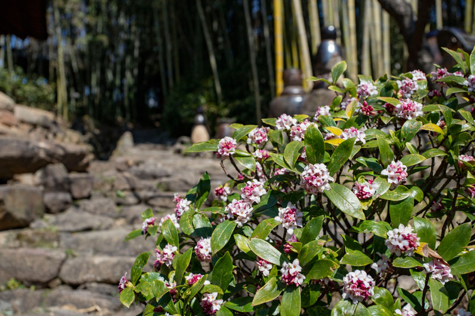
● 대한민국 구례
산수유 고운 빛
각 계절마다 고유의 향기가 있다. 봄에는 파릇하게 올라오는 새싹과 얼어붙었던 땅이 녹아내리며 나는 흙내음, 그리고 꽃향기. 그 향긋한 봄의 기억을 따라가면 언제나
그곳에는 구례가 있었다. 화엄사에는 삼색매가 차례로 피고, 온 마을에는 산수유 고운 빛이 흩날리는 곳. 올해도 어김없이 봄을 맞이했을 그곳이 요즘 더욱 생각난다.
구례에 가면 꼭 들르던 쌍산재도 그립다. 대문을 들어서면 은은하게 나던 천리향 냄새. ‘지리산 약초 뿌리 녹는 물이 다 흘러든다’라는 말이 있는 당몰샘 한 모금이
절실하다.
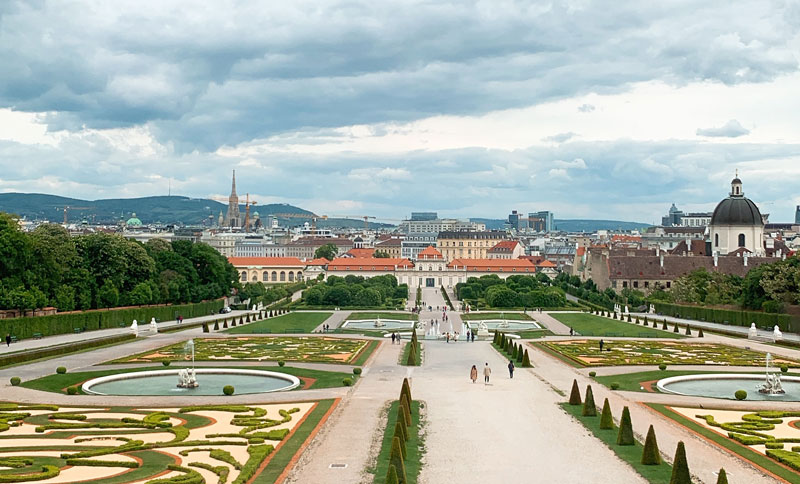
● 오스트리아 비엔나
여행에서 가장 향기로운 순간
향기는 맡아지기도, 때론 느껴지기도 한다. 체코 프라하에서 오스트리아 비엔나로 넘어가는 열차 안에서 벨베데레 궁전 관람을 예약했다. 다음날 이른 아침, 호기롭게 홀로
출발했지만 중앙역에서 길을 잃고 말았다. 다들 바쁜 출근길 사이, 유일하게 손을 내밀어 준 이는 어느 할아버지였다. 그는 열차를 기다릴 수 있는 구역까지 직접 동행해
주었다. 그런데 반전이 있었다. 할아버지를 따라간 곳은 탑승구의 반대편이었던 것이다. 당황해 주위를 둘러보니, 저 멀리 헐레벌떡 뛰어오는 할아버지가 보였다.
‘Sorry’를 외치는 이름 모를 할아버지의 따스한 마음이 향기로 느껴졌다. 여행에서 만날 수 있는 가장 향기로운 냄새는, 사람 향기가 아닐까.
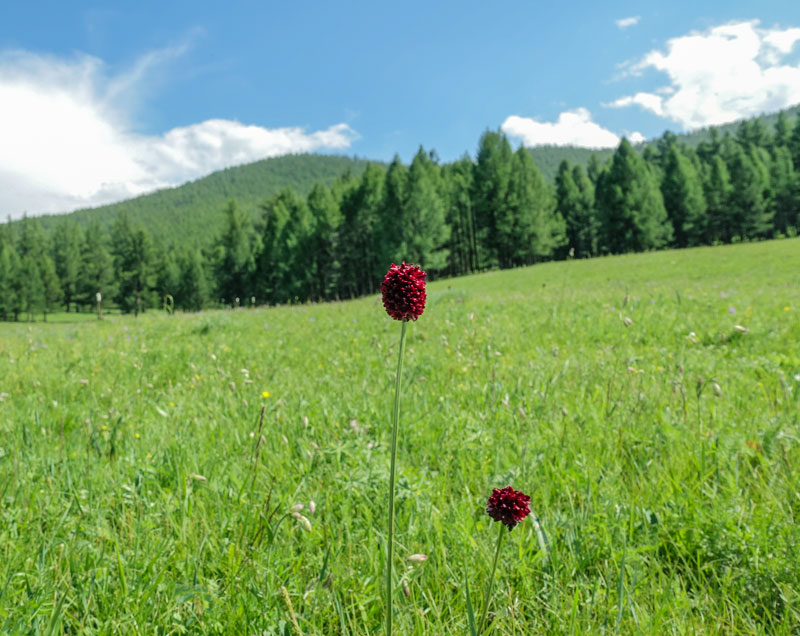
● 몽골 쳉헤르
싱그러운 야생화
몽골 쳉헤르가 떠오른다. 광활한 초원과 침엽수림에 둘러싸여 즐기는 온천욕이란! 휴대폰조차 먹통이 되어 버리는 오지에서 인생에 남을 피크닉을 즐겼다. 게르에서 늘어지게
낮잠을 자다 지겨워질 때 즈음 가벼운 산책에 나섰다. 숲 근처까지 천천히 올라, 돗자리를 펴니 기나긴 겨우내 움츠렸던 자연이 여름을 맞이하고 있었다. 야생화의
싱그러운 향이 코끝으로 스며들었다. 이 광활한 자연을 아무 방해받지 않고 온전히 나홀로 누릴 수 있다니, 지구의 비밀스러운 공간으로 특별한 초대를 받은 것만 같던
기억이다.
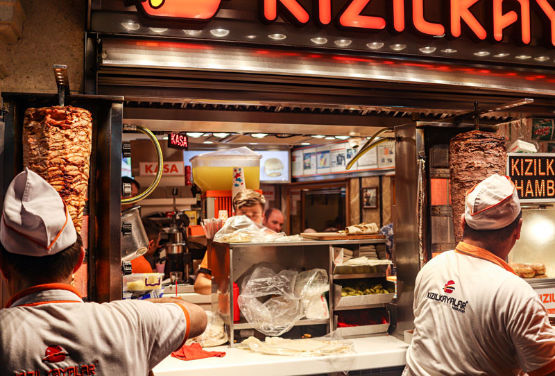
● 터키 이스탄불
이국적인 케밥
이국적인 향기가 가득한 터키가 떠오른다. 탁심 광장(Taksim Square)을 지날 때쯤, 케밥 냄새가 코끝에 맴돌았다. 장시간 비행으로 허기진 배를 붙잡고,
터키에서 먹는 첫 케밥이라며 잔뜩 기대하며 기다렸던 시간. 하얀 모자를 쓴 요리사들이 케밥 고기를 썰고 있던 그때가 문뜩 그리워졌다. 이스탄불에서 하루의 여행을
마치고 돌아오던 길에 항상 걸음을 붙잡았던 옥수수 굽는 냄새도, 그 향기를 못 이겨서 결국 사 먹은 달콤한 군옥수수도. 갈라타 다리(Galata Bridge) 앞에서
골든 혼(Golden Horn) 뒤로 저무는 노을을 보고 있던 시간도 그립다.
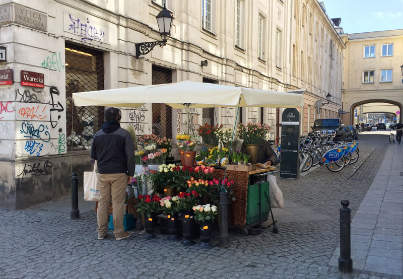
● 폴란드 크라쿠프
꽃 한 송이
폴란드 사람들은 꽃을 주고받는 것이 일상생활화되어 있을 만큼 꽃을 사랑한다. 덕분에 거리 곳곳에서 쉽게 꽃 노점을 볼 수 있다. 크라쿠프를 여행할 당시 꽃바구니를
들고 직접 한 송이씩 건네는 모습에 혼자 괜히 설레었던 기억이 난다. 상인이라는 사실도 모르고 말이다. 바르샤바에서 만난 한 꽃 노점 사장님이 그랬다. “사랑하는
이에게 고백하려면 알록달록 모은 화려한 꽃다발보다는 한 가지 종류로 구성된 차분한 꽃다발 선물이 좋아!” 폴란드의 거리에는 꽃내음과 함께 로맨틱한 향기가 솔솔 난다.
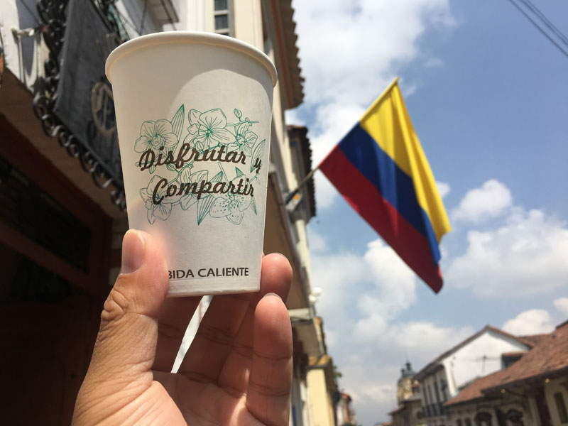
● 콜롬비아 보고타
진한 오후, 커피 한 잔
콜롬비아의 수도, 보고타 구시가지 골목을 거닐다 보면 한 번씩 발걸음을 멈추게 된다. 진한 커피 향기 때문이다. 콜롬비아에서는 유명 커피 프랜차이즈인 ‘후안 발데스
카페(Juan Valdez Cafe)’처럼 멋들어진 커피숍을 굳이 찾아가지 않아도 된다. 단돈 몇 백원이면 거리 수레에서 별다방, 콩다방보다 훨씬 질 좋은 커피를
맛볼 수 있기 때문이다. 종이컵에 따끈한 커피가 가득 담기면 갓 튀긴 콜롬비아 국민 간식 부뉴엘로(Bunuelo)를 함께 곁들이자. 부뉴엘로는 동그란 반죽을 납작하게
만든 뒤 기름에 튀겨 낸 도넛이다.
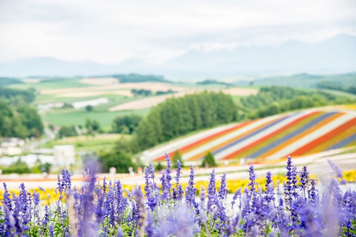
● 일본 훗카이도 비에이
보랏빛 향기
한국의 무더위를 피해 보겠다며 찾았던 홋카이도. 그런데 도착하자마자 알아 버렸다. 서울보다 위도가 조금 높을지라도, 여름은 여름일 뿐이라는 사실을. 계속되는 더위에
몸과 마음이 지쳐 갈 때쯤, 눈앞에 꽃길이 펼쳐졌다. 비에이(美瑛)에 위치한 시키사이노오카(四季彩の丘)였다. ‘사계절 빛깔의 언덕’이라는 뜻에 걸맞게 어딜 봐도 예쁜
꽃길, 주인공은 단연코 라벤더다. 보기만 해도 기분이 좋아지는 라벤더의 은은한 향기 덕분에 여행의 피로가 녹아내렸다. 홋카이도의 여름은 보랏빛 향기로 기억된다.
Feature
×
● NORWAY
피오르로 향하는 방법
플렘 레일웨이
플램(Flam)은 피오르 조류가 시작되는 곳으로 잔잔한 호수와 웅장한 산을 품고 있다. 해발고도 860m에 위치한 피오르를 보기 위해서는 플램 레일웨이에 탑승하는
것이 가장 좋다. 플램 열차 길은 수많은 여행객들이 ‘세계에서 가장 아름다운 기찻길’이라며 찬사를 보낼 정도로 매력적이다. 한 폭의 그림 같은 역을 지나 웅장한
자연을 관통한다. 청명한 폭포를 지날 때는 카메라를 제자리에 내려놓기가 힘들 정도. 아리따운 자연과 유리창을 두고 씨름을 벌여야 하는 여행객들을 위해
쿄스포센(Kjosfossen) 폭포 앞에서 기차는 잠시 정차한다. 들숨에 자연을 날숨에 탄성을 자아낼 수밖에 없는 곳이다.
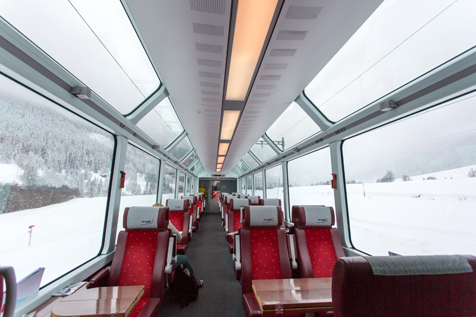
● SWITZERLAND
하이디의 동산
글래시어 익스프레스
글래시어 익스프레스에서는 하이디가 뛰어다닐 것만 같은 스위스의 자연을 온몸으로 즐길 수 있다. 양 옆 창문이 모두 통유리 파노라마로 제작되었기 때문이다.
생모리츠(St. Moritz)에서 체르마트(Zermatt)까지 약 300km 구간을 운행한다. 익스프레스(급행)라는 말이 무색하게 글래시어 익스프레스는 시속
37km라는 느린 속도로 달리기 때문에 총 8시간이 소요되지만 푸른 숲과 새하얀 빙하, 동화 같은 마을을 보고 있으면 결코 긴 시간이 아니다. 눈만 즐거운 게
아니다. 8시간의 여행 동안 배고플 여행객들에게 단품 요리, 3코스 요리, 5코스 요리를 비롯해 태블릿 PC 등 즐길 거리도 다양하게 제공한다.
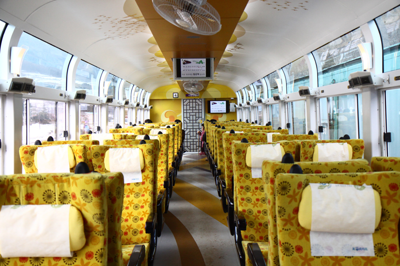
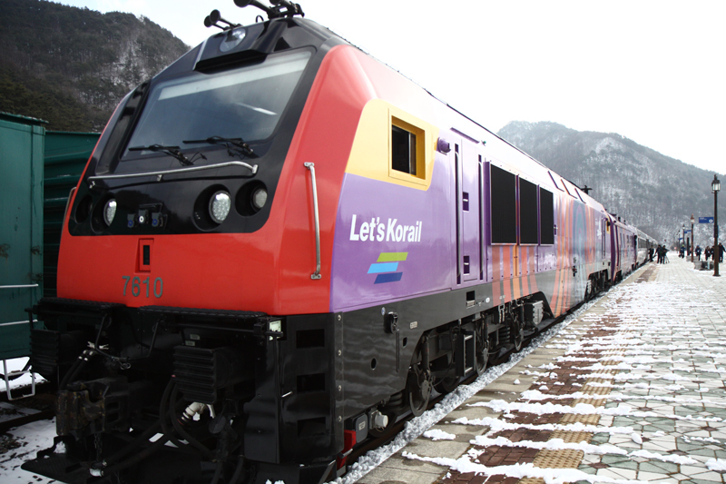
● KOREA
백두대간의 보석
정선 아리랑 열차
정선 아리랑 열차는 과거 산업 철도였지만 쇠퇴한 정선선을 살리기 위해 만들어진 관광 열차다. 강원도 정선의 아름다움을 즐길 수 있도록 통유리로 디자인해 백두대간을
넓게 조망할 수 있다. 코레일에서 운영하는 관광열차답게 부채춤과 음악 연주, 승무원의 열차 소개 등 열차 안을 즐길 거리로 가득 채웠다. 열차에서 내려도 열차 여행은
끝나지 않는다. 정선 오일장, 레일바이크 뱃사공, 아리랑 극 등 열차와 연계한 코스 상품이 다양하다.
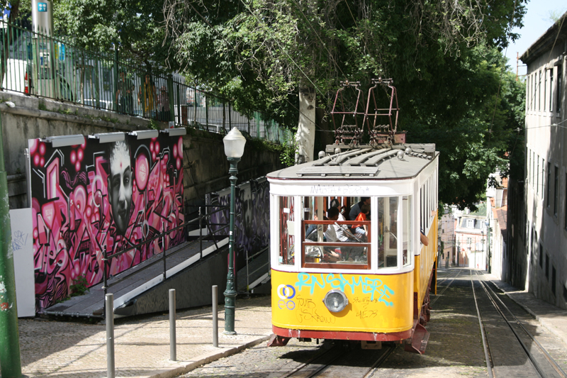
● PORTUGAL
세상에서 가장 로맨틱한 시간
리스본 12번 트램
유럽은 모든 곳이 낭만적이라는 이야기가 있지만, 그중에서도 포르투갈 리스본은 ‘로맨틱’과 잘 어울리는 도시로 꼽힌다. 트램 속에서 바라보는 리스본은 영화의 한
장면이나 다름없다. 리스본에서 가장 아름다운 트램 노선은 28번이지만, 길게 늘어선 줄이 부담스럽게 느껴진다면 12번 트램을 추천한다. 12번 트램에서는 상조르제성,
리스본대성당을 조망할 수 있다. 주의할 점으로는 지나가는 풍경에 푹 빠져 트램에서 내리는 것을 잊을 수 있다. 내릴 장소를 몇 번이고 체크하는 것이 좋다.
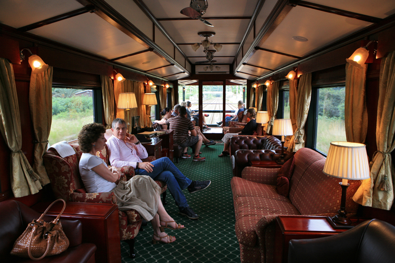
● SOUTH AFRICA
아프리카의 기운
로보스 레일
12칸 기차에 승객은 28명뿐. 로보스 레일의 호화로움을 단적으로 느낄 수 있는 대목이다. 로보스 레일의 탑승객은 승객이 아닌 게스트로 불리며 24시간 상주하는 개인
버틀러가 있다. 스위트로 불리는 좌석 역시 5성급 호텔에 버금가는 서비스를 받게 된다. 호텔급 식사와 고급 와인, 시가가 무제한이고 두 번의 사파리 투어를 제공한다.
밥을 먹거나 잠을 자는 시간에는 열차 운행을 멈춰 승객을 배려한 것도 열차의 장점이다. 열차의 하이라이트는 맨 뒤 칸 전망차. 마지막 칸에는 지붕만 있어 두 눈으로
아프리카 대륙을 생생하게 볼 수 있다.
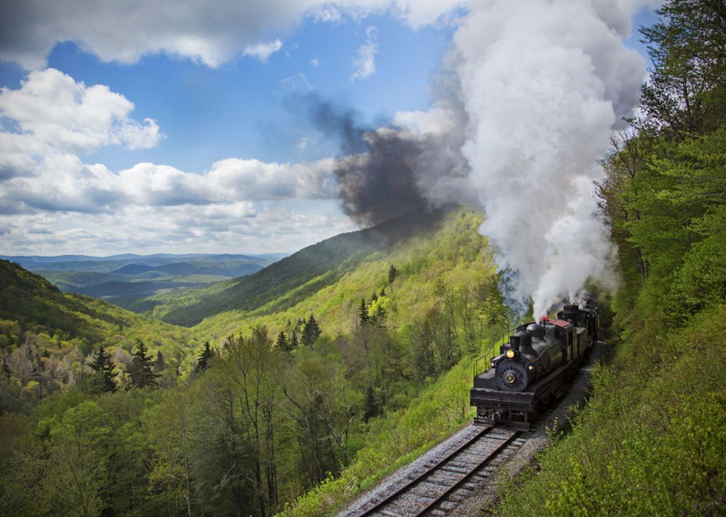
● USA
응답하라 서부시대
카스 시닉 레일로드
카스 시닉 레일로드(Cass Scenic Railroad)는 서부 시대부터 지금까지 운영하는 증기기관차다. 산 아래 있는 카스와 1,500m 높이에 위치한 전통
마을을 오가는 열차를 타면 마치 과거로 타임 슬립한 것처럼 서부시대로 들어간 듯한 경험을 하게 된다. 개발 대신 보존을 선택한 지역 주민들 덕에 서부시대 의상과
먹거리, 풍경을 보며 느림의 미학으로 가득한 아날로그 여행을 즐기기 충분하다. 증기기관차를 타고 산을 오르내리는 동안 기대하지 않았던 미국의 웅장한 풍경을 마주할 수
있어 여행자에게 잊지 못할 추억을 선사한다.
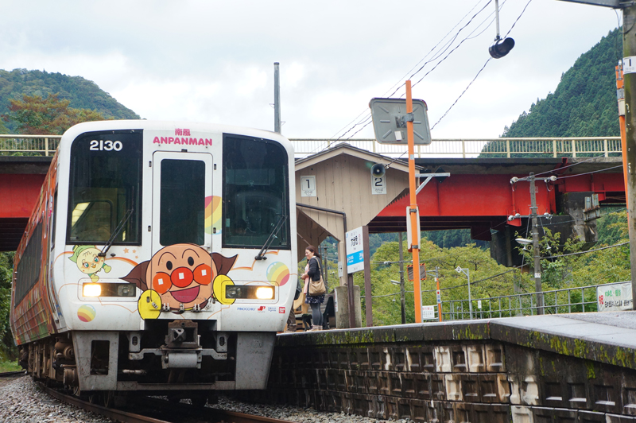
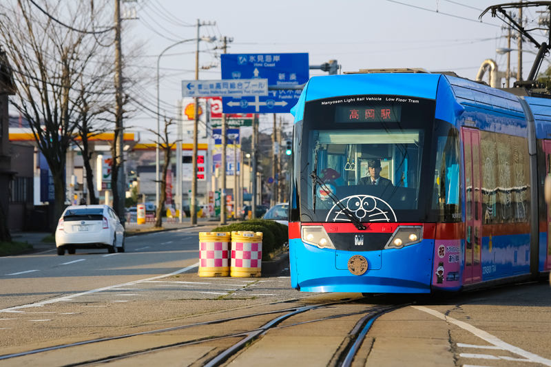
● JAPAN
만화를 사랑한다면
다카오카 도라에몽 열차
일본에는 팬들에게 사랑받은 만화를 기념할 수 있는 전차가 있다. 다카오카(高岡)는 도라에몽의 원작자 후지코 후지오의 고향이다. 그래서 도라에몽을 기리기 위해 도라에몽
래핑 열차를 운행한다. 열차 내부에는 도라에몽 인형이 가득해 도라에몽 팬들 사이에서 버킷리스트 1순위로 자리 잡았다. 이외에도 <슬램덩크>와 <바다 마을 다이어리>의
배경이 된 ‘에노덴(江ノ電)’ 전차, 호빵맨 작가인 타카시의 고향, 고치현(高知.)에서 운영 중인 호빵맨 캐릭터로 가득 꾸민 노면 전차가 있다
Feature
×
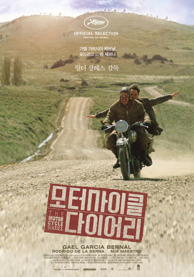
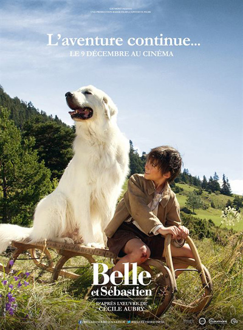
● 여행을 망설인다면
모터 사이클 다이어리
여행은 자구책이다. 물론 자구책의 전부가 여행이 될 순 없지만 그럼에도 불구하고 많은 이들이 자구책으로 여행을 선택한다. 새로운 것을 배울 수 있으며, 인생을 즐기는
최고의 방법이기 때문에.
영화 <모터사이클 다이어리>는 그런 이야기를 담고 있다. 주인공 퓨세와 알베르토는 4개월 만에 8,000km를 달려 남미 대륙의 북쪽 끝에 도착할 계획을 세운다.
빼놓은 동반자가 있다. 포데로사, 알베르토의 애마 모터사이클로 1939년식 노턴 50이다. 영화가 시작하고 50분쯤 지나 이 모터사이클은 처참하게 폐차된다.
두 청년의 실화를 바탕으로 만들어졌기 때문에 쥐어짜는 듯한 감동도, 획일적인 재미도 찾아 볼 수 없다. 잔잔한 분위기, 쭉 뻗어 있는 남미의 길이 그저
아름다울 뿐이다. 이들의 여정은 7개월이 다 되어서야 베네수엘라 카라카스에서 끝난다. 알베르토는 의사로서 현지에 남기로 했고, 퓨세는 돌아가 학업을
마무리한다. 그렇게 헤어진 그들은 정확히 8년 뒤, 쿠바에서 만나게 된다. 알베르토, 그는 쿠바의 의료 개혁에 중대한 영향을 미친 인물이다. 퓨세, 그는
마지막 혁명가 ‘체 게바라’다.
모터사이클 다이어리(The Motorcycle Diaries, 2004)
감독: 월터 살레스
장르: 드라마 | 125분)
출연: 가엘 가르시아 베르날, 로드리고 드 라 세르나
● 사랑과 여행 사이
첫 키스만 50번째
사랑과 여행은 닮아 있다. 깊이와 기간이 비례하지 않는 것도, 함께할 때 행복할 수 있는 것도. 알수록 노련해지고 갈수록 힘들어지는 것까지 말이다.
영화 <첫 키스만 50번째>의 배경은 신혼부부의 단골 여행지, 하와이다. 헨리는 우연히 루시를 만난다. 사랑스러운 그녀에게 첫눈에 반해 다가갔지만, 다음날 루시는
헨리를 파렴치한 취급하며 기억조차 하지 못한다. 사실 루시는 단기 기억상실증으로 매일 아침 모든 기억이 교통사고를 당했던 당시로 초기화된다. 즉 헨리는 매일
같은 루시를 만나지만 루시는 매일 다른 헨리를 만나는 셈이다. 헨리는 루시의 마음을 사로잡기 위한 기상천외한 작업을 매일 시도하고, 하루마다 달콤한 첫
데이트를 즐긴다. 마냥 행복할 순 없지만, 그렇다고 낙담스러운 상황은 아니니까. 주어진 상황 속에서 최대한 해피엔딩에 가깝게 만들기 위해 노력하는 것이다.
그리고 그런 것이 현실이다. 매혹적인 유혹은 아니지만 사랑하는 사람과 아름다운 여행을 떠나고 싶다는 로망을 짙게 남기는 영화다.
첫 키스만 50번째(50 First Dates, 2004)
감독: 피터 시걸
장르: 로맨스, 코미디 | 99분
출연: 아담 샌들러, 드류 베리모어
● 동화처럼 순수한 여행
벨과 세바스찬,계속되는 모험
어린 시절, 동화책을 읽으며 홀로 상상하곤 했던 풍경. 알프스, 보라색 꽃, 나비가 날아다니는 너른 동산, 저 멀리 뛰어오는 흰 강아지 한 마리. 영화 <벨과 세바스찬, 계속되는
모험>은 이것들을 재현한다.
영화의 배경은 프랑스와 스위스 국경을 이루는 피레네 알프스 언덕, 6살 꼬마 세바스찬은 할아버지와 함께 양 떼들을 돌보며 사는 어린아이다. 어느 날 마을의 양
떼가 습격당하게 되고 마을 사람들이 다치는 사건이 발생한다. 모두가 미친개의 소행일 것이라고 추측했고, 언덕을 뛰어놀던 세바스찬은 소문 속 미친개를 마주치게
된다. 바로 벨이다. 소문과는 달리 벨은 선한 눈빛을 가진 개였고, 세바스찬은 어른들 몰래 벨을 돌봐 주기 시작한다. 세상에서 가장 특별한 친구를 만나게 되는
순간이다. 영화 속 이야기가 단순히 둘의 우정을 중심으로 전개되진 않는다. 시대적 배경이 2차 세계대전이기 때문에, 독일 점령하의 프랑스, 유대인, 나치 등의
이야기가 등장한다. 영화 속 알프스의 모습을 주목해 감상하자. 벨과 세바스찬이 가까워지고, 시간이 흐르는 것을 들판의 계절감으로 표현한다. 모든 장면이
동화다.
벨과 세바스찬, 계속되는 모험(Belle and Sebastian, 2015)
감독: 크리스찬 두가이
장르: 드라마 | 97분
출연: 펠릭스 보쉬